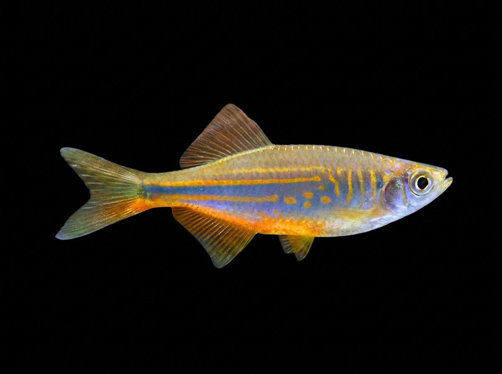

Giant Danio
Devario aequipinnatus
The Giant Danio is a freshwater fish native to Sri Lanka and other parts of South Asia. In Sri Lanka, it is found in rivers, streams, and hill-country waterways with clear, well-oxygenated water and moderate currents. It prefers habitats with rocky bottoms, submerged vegetation, and open areas where it can swim actively. This fast-moving schooling fish is known for its larger size compared to other danios, along with its elongated body and attractive bluish-silver coloration with golden markings. It feeds on small insects, insect larvae, plankton, and other tiny aquatic organisms. The Giant Danio is an energetic species that plays an important role in Sri Lanka’s freshwater ecosystems and is also popular among aquarium enthusiasts due to its hardiness and active nature